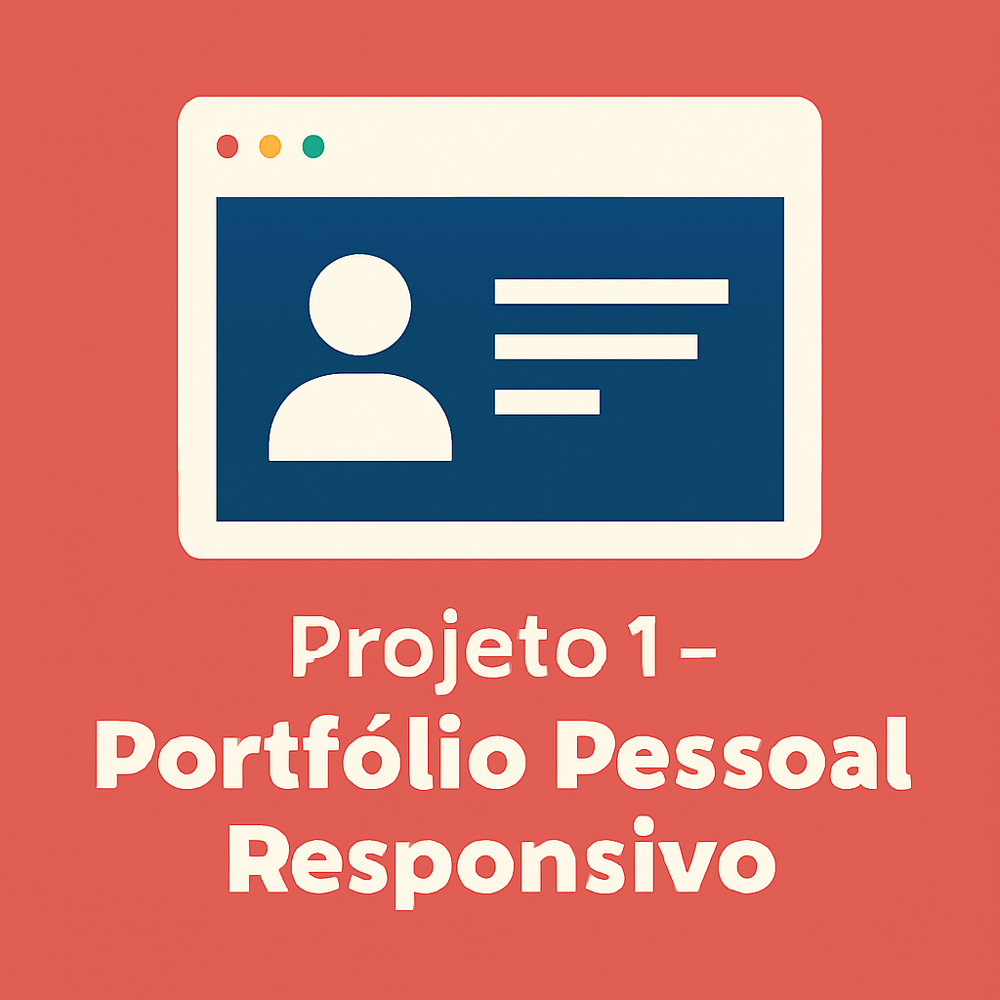
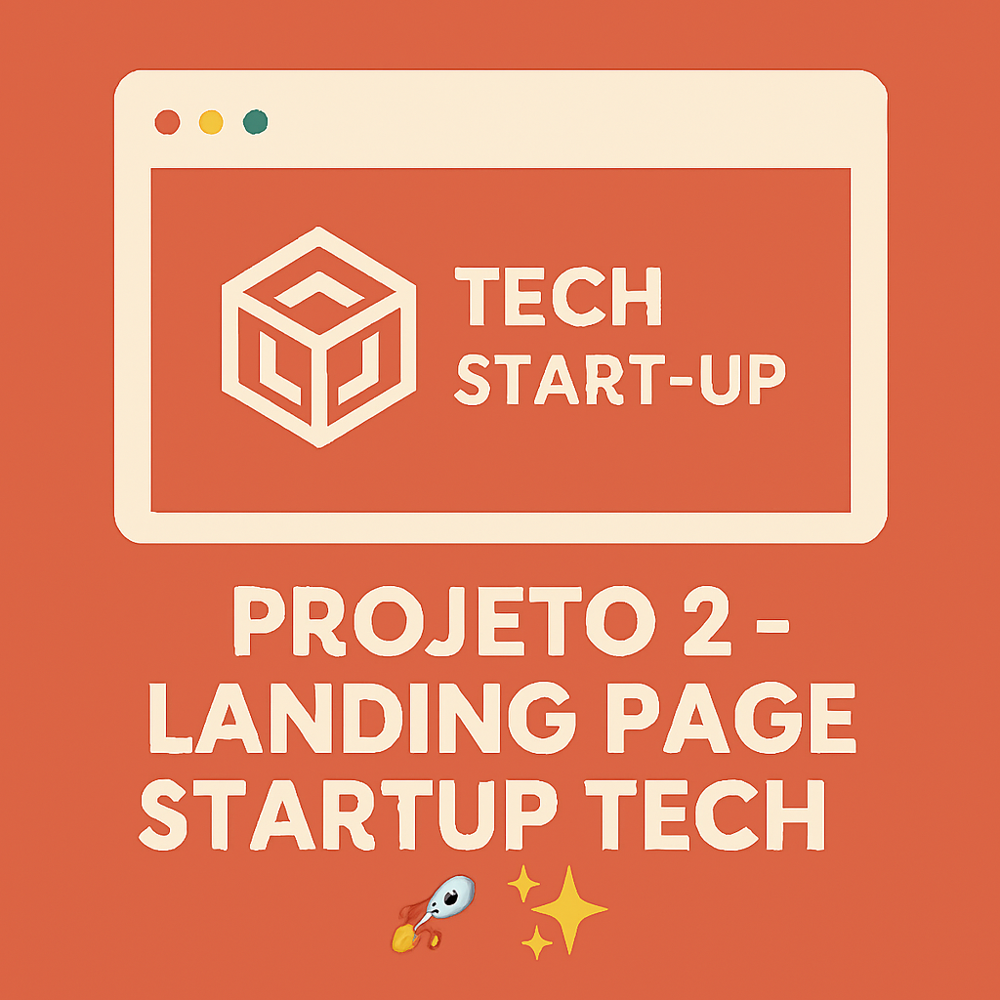
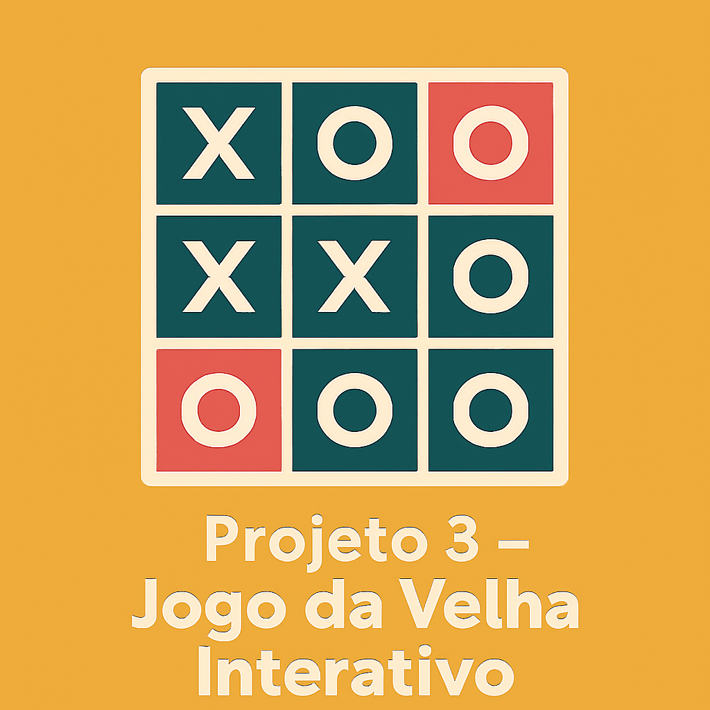
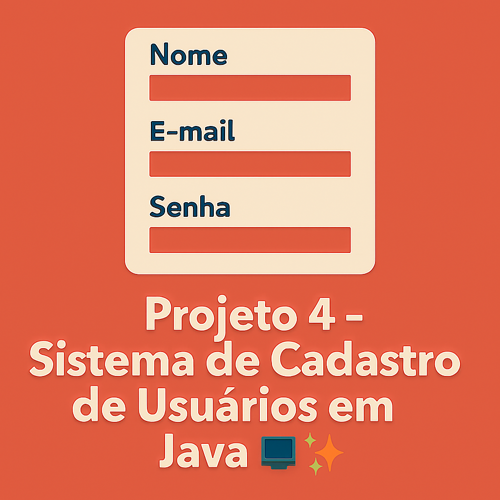

Site em HTML e CSS com layout responsivo e boas práticas de acessibilidade.

Página inicial fictícia de uma startup, com seções de serviços e depoimentos.

Aplicação web em JavaScript que permite partidas entre dois jogadores o jogo da velha.

Aplicação fictícia em Java para cadastro e gerenciamento de usuários.